En estas guías respondemos las preguntas que más nos hacen las familias de Berazategui, Quilmes, Florencio Varela y toda la Zona Sur. Son informativas y no reemplazan una evaluación: si algo de lo que leés te preocupa, escribinos y lo charlamos.
¿Cuándo llevar a mi hijo al psicólogo?
Señales y cómo es la primera consulta.
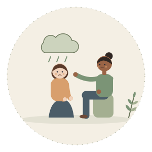
Ansiedad en niños y adolescentes
Señales y cómo acompañar en casa.
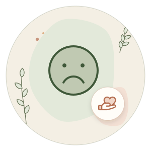
Rabietas y berrinches
Qué es esperable y cuándo consultar.
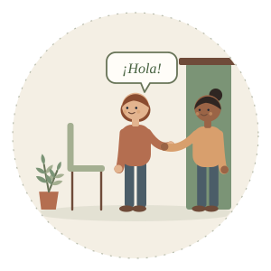
Tu primera consulta con el psicólogo
Qué pasa y qué preguntar.
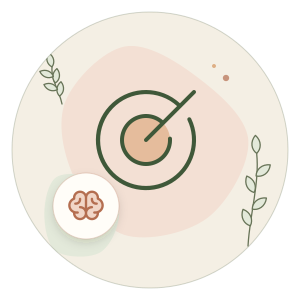
TDAH en niños y adultos
Atención, inquietud e impulsividad.
¿Qué hace un psicopedagogo?
Cuándo consultar y cómo es el proceso.
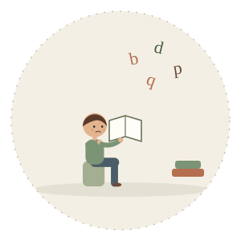
Dislexia en niños
Señales en el jardín y la primaria.
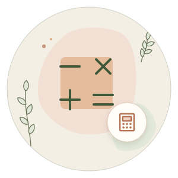
Discalculia
Cuando los números cuestan más.
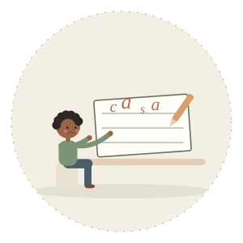
Dificultades en la escritura
Disgrafía y disortografía.
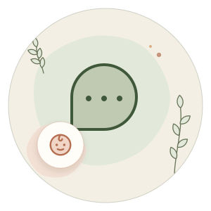
Mi hijo no habla: ¿cuándo consultar?
Qué es esperable a cada edad en el lenguaje.
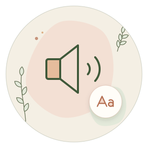
Mi hijo no pronuncia bien
La erre, la ese y otros sonidos.
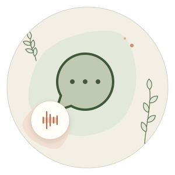
Tartamudez en niños
Cuándo es parte del desarrollo y cuándo consultar.
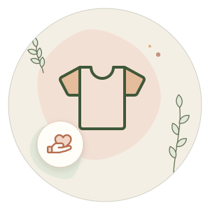
¿Qué hace la terapia ocupacional?
Autonomía, juego y sentidos.
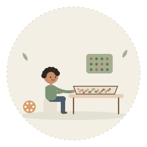
Integración sensorial
Ruidos, texturas y movimiento: qué mirar.
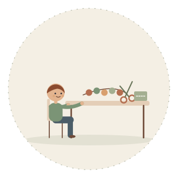
Motricidad fina
Lápiz, tijeras y botones: qué es esperable.
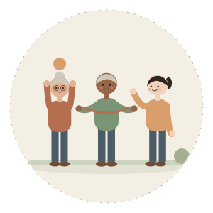
Ejercicio para adultos mayores
Por qué y cómo empezar.
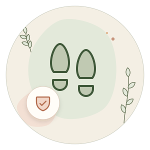
Cómo prevenir caídas
Fuerza, equilibrio y una casa segura.
Olvidos en adultos mayores
Qué es esperable y cuándo preocuparse.

¿Cómo saber si mi hijo tiene autismo?
Señales por edad y cuándo consultar.
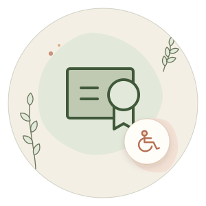
¿Qué es el CUD y cómo se tramita?
Prestaciones para personas con discapacidad.
¿Empezamos?
Contanos tu situación por WhatsApp y coordinamos la primera entrevista, sin derivación previa.
Consultar por WhatsApp